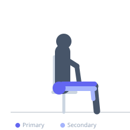
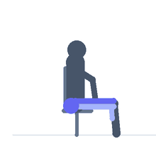

Exercise guide / Stationary / Spin Bike Sprint Intervals
Stationary / Spin Bike Sprint Intervals
Stationary bike sprint intervals use a fixed or spin cycle to perform repeated bouts of maximal pedalling resistance and cadence, separated by low-intensity recovery periods. The seated position eliminates ground-reaction forces, making it a joint-friendly alternative to running-based sprints while still imposing high demand on the quadriceps, gluteus maximus, and cardiovascular system. The resistance dial controls the mechanical load, allowing precise scaling from beginner to elite training intensities.
Primary muscles
vastus lateralis
vastus medialis
gluteus maximus
Secondary muscles
biceps femoris long head
gastrocnemius medial
iliacus
Stabilizers
transverse abdominis
Equipment


Starting position
- Adjust the seat height so there is a slight bend (5–10°) in the knee at the bottom of the pedal stroke. Adjust the handlebar height for comfort. Clip in or place feet in the cages securely.
Setup
- Set resistance at a moderate level for the warm-up. Identify the resistance range for sprint intervals (heavy) and recovery (light) before starting.
Steps
- Step 1: Warm up for 5 minutes at a comfortable pace with light resistance.
- Step 2: Increase resistance to a heavy setting and pedal at maximum cadence (100–120 RPM) for 20–30 seconds.
- Step 3: Reduce resistance to minimal and slow cadence to 60–70 RPM for 60–90 seconds recovery.
- Step 4: Repeat the sprint-recovery cycle 8–12 times.
- Step 5: Cool down for 5 minutes with light resistance and easy pedalling.
Coaching cues
- Push the pedal through the floor, then scrape mud off the bottom of your shoe
- Sit tall — do not collapse the chest onto the handlebars during hard efforts
- Heavy resistance makes the sprint productive — light resistance just spins the legs
Breathing
- Breathe forcefully and continuously during sprints. During recovery, focus on slowing the breathing rate by exhaling fully through pursed lips.
Range of motion
- The pedal stroke should feel like a full circle — push down through the front, pull through the bottom, and think about pulling up with the rear foot. This distributes load across quads, hamstrings, and glutes.
Tempo
- Sprint 20–30 seconds at maximum effort. Recover 60–90 seconds at easy effort. 8–12 rounds. Total session 20–30 minutes including warm-up and cool-down.
Common mistakes
- Using too little resistance and spinning the legs at an unsustainable cadence with no load — this produces minimal metabolic stress
- Rising out of the saddle during sprints without sufficient resistance, which loads the quads in an inefficient pattern
- Skipping the seat height adjustment, which causes knee tracking problems
Safety
- Ensure the seat post and handlebar bolts are tightened before each session
- If using clip-in cycling shoes, practice unclipping before beginning high-intensity intervals
Training
- endurance: 8–12 reps
- endurance: 1–1 sets
- Rest: {'endurance': 90}